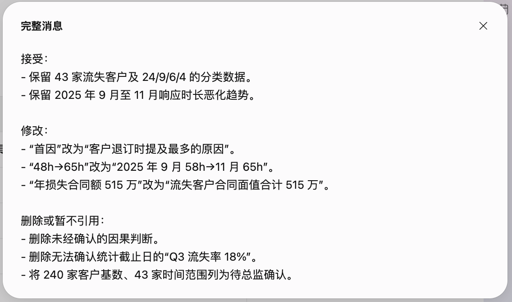
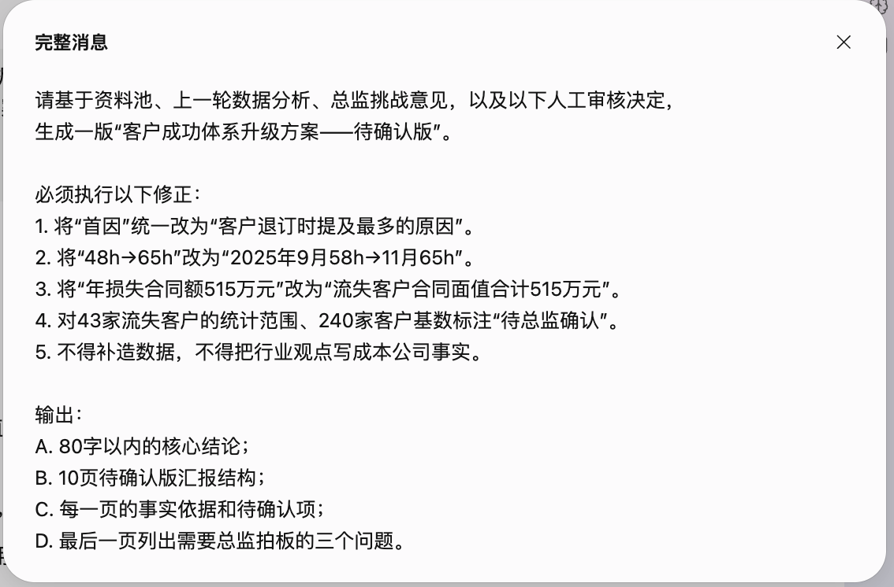
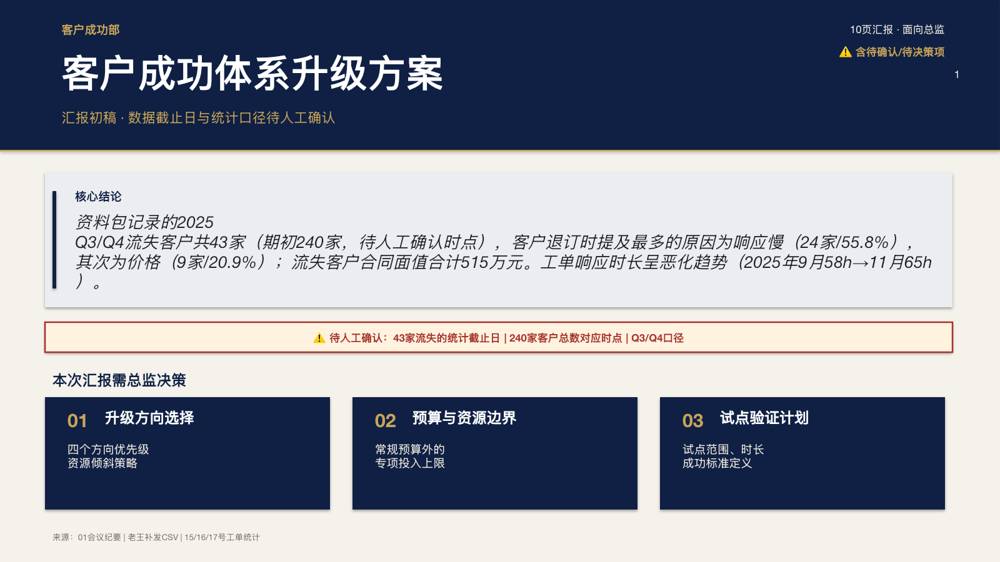
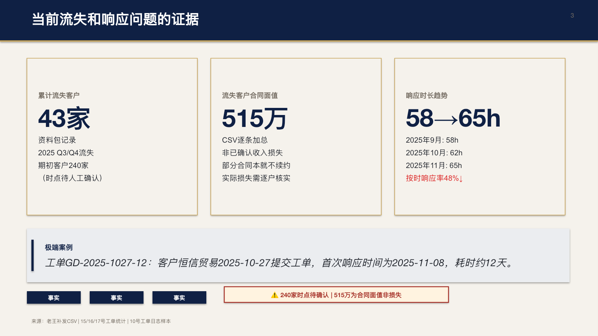
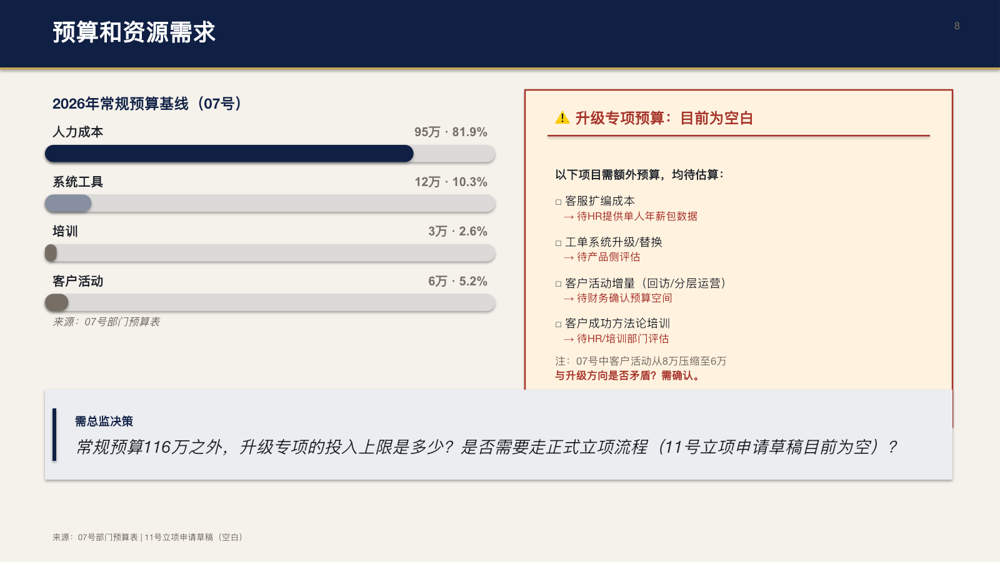
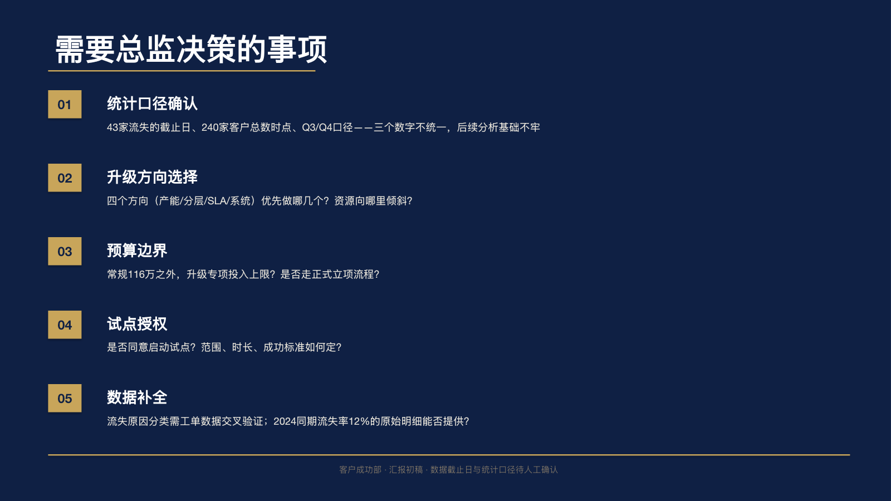

案例 01 · 小明的交付升级记
第六章 · 人工审定与待确认版
小明终于开始改稿：保留能证明的，收窄说过头的，把不能确认的交给决策人。
总监挑战后，小明做了一轮人工审定：哪些数据可以保留，哪些措辞必须改，哪些数字要暂不引用。然后，他把这份审定决定再次交给千问办公，生成待确认版汇报结构与文字交付物。
小明
修改后的版本看起来完整了，我可以直接发出去吗？

小触
完整不等于批准。先问谁有权确认统计口径、预算和收益；待确认项不是瑕疵，是交付的一部分。
小明
所以人工验收不是给 AI 打分，而是把责任重新放回正确的人手里。
小触
现在，这件事才从“我做完了”变成“团队可以接着做”。这就是沉淀复用。
本章交付卡
每一章都把“资料 → 指令 → AI 产出 → 人工判断 → 结果状态”拆开，读者可以快速判断这一环到底完成到哪里。
输入资料总监挑战记录 + 人工审定决定 + 前几轮资料与证据。
使用指令第六轮生成 10 页汇报初稿；第七轮确认保留/修改/删除；第八轮生成待确认版。
AI 产出10 页 PPT 初稿、Update 版 PPT、待确认版 Markdown。
人工判断保留 43 与 24/9/6/4；改写“首因”、跨口径趋势和515万的表达；删除未确认的18%。
最终结果形成可供总监继续确认的汇报包，不宣称已经通过审批。
人工审定实际决定了什么
接受
保留 43 家流失客户及 24/9/6/4 分类数据；保留 2025 年 9—11 月响应时长恶化趋势。
修改
改为“客户退订时提及最多的原因”；只使用同口径的 2025 年 9—11 月响应趋势；改为“合同面值合计515万元”。
删除 / 待确认
不写死 Q3 流失率 18%；240 家基数、43 家范围和截止日交给总监确认。
真实推演证据 · 人工审定与二次修正
24 是人工审定决定，25 是把决定交回千问办公的二次修正指令。二者共同构成从 AI 初稿到待确认版的闭环。
{kind=link}

{kind=link}

当前交付物 · 可下载，也可在当前页阅读
下面的文件是真实推演产生的阶段性文件。它们已经可以支撑复现与讲解，但还不是总监最终批准版。
Markdown：二次修正后的文字交付物；PPT：10 页汇报初稿与 Update 版。状态：⚠ 待总监确认。
关键页面 · Update 版汇报稿
PPT 保留下载，同时展示几张关键页面。点击任意页面可在当前页放大查看。
{kind=link}

{kind=link}

{kind=link}

{kind=link}

最后三项仍需总监拍板
- 43 家流失客户的统计范围、截止日，以及 240 家客户基数的时点。
- 是否接受“客户退订时自述原因归类”作为本次汇报的证据边界，是否补做工单交叉验证。
- 升级方向、专项预算和试点成功标准，分别由总监、财务、HR、产品和法务确认。
接住混乱→看懂任务→整理证据→AI 初稿→人工审定→待确认交付